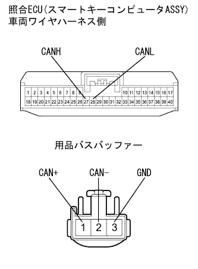

DTC B2779 Engine Starter Communication Malfunction |
| DTC No. | DTC Detection Condition | Inspection Area |
|---|---|---|
| B2779 | Remote start does not respond, communication malfunction |
|
) and the registration procedure in the reference section before proceeding.| Step 1 | Re-register Remote Start |
Using SST (TaSCAN), re-register the remote start.
|
| ||||
| OK | ||
| ||
| Step 2 | Inspect Wire Harness and Connector (Certification ECU - Remote Start ECU) |
 |
Disconnect the certification ECU (smart key computer assembly) connector and the accessory bus buffer.
Using SST (Toyota electrical tester), measure the resistance between each terminal (between the certification ECU and remote start ECU) of the vehicle side wire harness connectors.
| Tester connection (terminal symbol) (Certification ECU - Accessory bus buffer) | Condition | Standard |
|---|---|---|
| 27(CANH) - 1(CAN+) | Always | Below 1 Ω |
| 28(CANL) - 2(CAN-) | Always | Below 1 Ω |
| Tester connection (terminal symbol) (Accessory bus buffer - Remote start ECU) | Condition | Standard |
|---|---|---|
| 1 (CAN+) - Refer to accessory manual | Always | Below 1 Ω |
| 2 (CAN-) - Refer to accessory manual | Always | Below 1 Ω |
| Tester connection (terminal symbol) (Accessory bus buffer) | Condition | Standard |
|---|---|---|
| 3 (GND) - Body ground | Always | Below 1 Ω |
| Tester connection (terminal symbol) (Certification ECU) | Condition | Standard |
|---|---|---|
| 28 (CANH) - Body ground | Always | 10k Ω or higher |
| 27 (CANL) - Body ground | Always | 10k Ω or higher |
|
| ||||
| OK | |
| Step 3 | Replace with Known Good Remote Start |
Replace the remote start with a normal one.
Check that the engine can be started with the remote start.
|
| ||||
| OK | ||
| ||